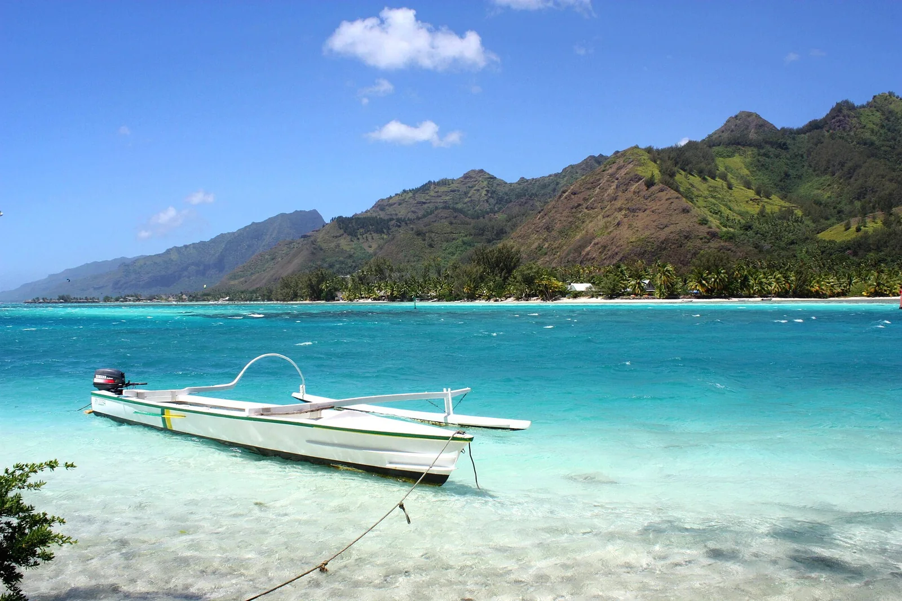

Lagon de Moorea
Polynésie française · snorkeling, kayak, paddle, baignade

Lagon turquoise au pied de montagnes déchiquetées, avec raies pastenagues et requins à pointe noire.
- Lieu
- Polynésie française
- Niveau
- Débutant
- Activités
- snorkeling, kayak, paddle, baignade
- Type d'eau
- Mer / océan
- Coordonnées
- -17.49, -149.85 (position approximative du secteur)
Dangers à connaître
- Bateaux dans le lagon.
- Corail fragile.
Le conseil d'Ocean Buddy
Respecte les distances avec les raies et évite les sorties qui les nourrissent.
Ouvrir dans Ocean Buddy Télécharger sur l'App Store
Source : Fiche Ocean Buddy · septembre 2026 · à vérifier localement.